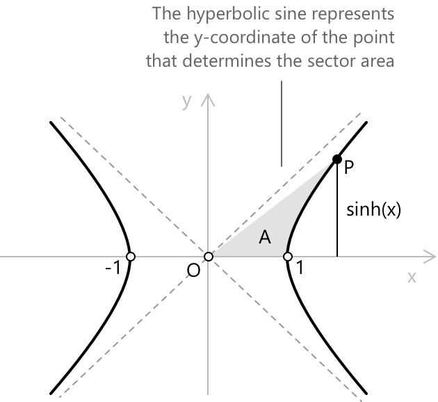
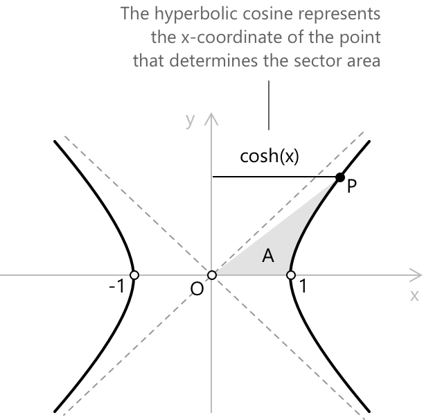
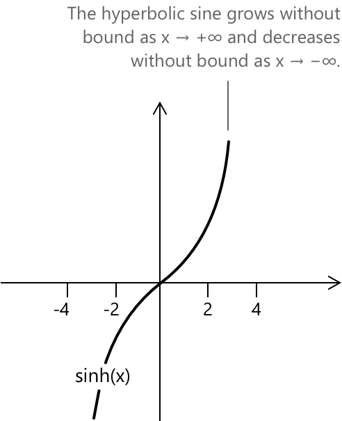
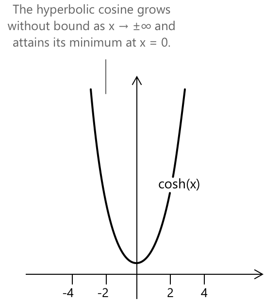

Гіперболічний синус та косинус
Вступ до гіперболічного синуса та косинуса
Ми бачили, що синус кута можна ввести геометрично, розглянувши, як точка рухається по одиничному колу. Гіперболічний синус, натомість, отримують, пов'язавши точку на правій гілці рівносторонньої гіперболи:
\[ X^{2} - Y^{2} = 1 \]
з площею відповідного гіперболічного сектора. Для будь-якого дійсного значення \(x\) ми вибираємо точку:
\[ P(X_{P},\, Y_{P}) \]
на гілці з \(X>0\) так, щоб знакове значення площі, обмеженої віссю \(OX\), відрізком від початку координат до \(P\) та частиною гіперболи між \((1,0)\) та \(P\), дорівнювало \(x/2\).

Поняття знакової площі дозволяє безперервним чином враховувати як додатні, так і від'ємні значення: коли \(x>0\) сектор лежить у першій чверті, тоді як для \(x<0\) він поширюється на четверту чверть, не порушуючи відповідності між параметром \(x\) та положенням точки \(P\). Після того як ця точка визначена, гіперболічний синус \(x\) — це просто її вертикальна координата:
\[ \sinh(x) := Y_{P} \]
Аналогічно до того, що було показано для гіперболічного синуса, ми можемо ввести гіперболічний косинус, розглянувши ту саму рівносторонню гіперболу. Як тільки точка: \[ P(X_{P},\, Y_{P}) \] була визначена як така, що відповідає знаковому гіперболічному сектору площею \(x/2\), гіперболічний косинус \(x\) визначається просто як її горизонтальна координата.

У той час як \(\sinh(x)\) відображає, наскільки точка піднімається або опускається вздовж гілки гіперболи, \(\cosh(x)\) фіксує її горизонтальне положення:
\[ \cosh(x) := X_{P} \]
У цій геометричній інтерпретації пара \(\bigl(\cosh(x),\, \sinh(x)\bigr)\) представляє координати єдиної точки \(P\), яка утворює заданий сектор \(A\).
Основна гіперболічна тотожність
Гіперболічний синус і гіперболічний косинус задовольняють співвідношенню, яке відіграє роль, аналогічну тотожності Піфагора. Це співвідношення відоме як основна гіперболічна тотожність:
\[ \cosh^{2} x - \sinh^{2} x = 1 \]
З геометричної точки зору ця рівність виражає той факт, що точка \(\bigl(\cosh(x),\, \sinh(x)\bigr)\) лежить саме на правій гілці рівносторонньої гіперболи:
\[ X^{2} - Y^{2} = 1 \]
Тут горизонтальна координата \(\cosh(x)\) та вертикальна координата \(\sinh(x)\) відіграють ролі, схожі на ролі прилеглого та протилежного катетів у випадку з одиничним колом, але геометрія керується гіперболою замість кола. Тотожність випливає з цієї конструкції: координати точки повинні задовольняти визначальному рівнянню гіперболи, і саме це призводить до \(\cosh^{2} x – \sinh^{2} x = 1\).
Гіперболічні тотожності
-
\[ \text{1. } \quad \sinh(2x) = 2\,\sinh(x)\,\cosh(x) \]
-
\[ \text{2. } \quad \cosh(2x) = 1 + 2\,\sinh^{2}(x) \]
-
\[ \text{3. } \quad \sinh(x+y) = \sinh(x)\cosh(y) + \cosh(x)\sinh(y) \]
-
\[ \text{4. } \quad \cosh(x+y) = \cosh(x)\cosh(y) + \sinh(x)\sinh(y) \]
-
\[ \text{5. } \quad \sinh(x-y) = \sinh(x)\cosh(y) – \cosh(x)\sinh(y) \]
-
\[ \text{6. } \quad \cosh(x-y) = \cosh(x)\cosh(y) - \sinh(x)\sinh(y) \]
Кожна тотожність відображає глибоку алгебраїчну симетрію гіперболічних функцій. Їхні формули додавання та подвійного кута тісно паралельні круговому випадку, але слідують геометрії рівносторонньої гіперболи, де \(\cosh(x)\) та \(\sinh(x)\) виникають як координати точки, пов'язаної з гіперболічним сектором.
Аналітичний вираз гіперболічного синуса
Перше виведення походить безпосередньо від показникової функції. Якщо розглянути поведінку \(e^{x}\) та \(e^{-x}\), ми помітимо, що вони природно розпадаються на симетричну та антисиметричну частини. Запишемо їх як:
\[e^{x} = \cosh(x) + \sinh(x)\] \[e^{-x} = \cosh(x) – \sinh(x)\]
ми можемо розглядати ці два вирази як просту систему з невідомими \(\cosh(x)\) та \(\sinh(x)\). Віднімаючи одне рівняння від іншого, ми ізолюємо антисиметричну компоненту, отримуючи:
\[ e^{x} - e^{-x} = 2\,\sinh(x) \]
і отже:
\[ \sinh(x) = \frac{e^{x} - e^{-x}}{2} \]
Допоміжний спосіб отримати ту саму формулу — повернутися до геометрії. Точка \((\cosh(x), \sinh(x))\) належить рівносторонній гіперболі:
\[ X^{2} - Y^{2} = 1 \]
Оскільки ми вже знаємо, що горизонтальна координата задовольняє рівності:
\[ X = \cosh(x) = \frac{e^{x} + e^{-x}}{2} \]
ми можемо підставити цей вираз безпосередньо в рівняння гіперболи та знайти \(Y\). Маємо:
\[ Y^{2} = X^{2} - 1 = \left(\frac{e^{x} + e^{-x}}{2}\right)^{2} – 1 \]
Розкриття квадрата та спрощення призводить до:
\[ Y^{2} = \left(\frac{e^{x} – e^{-x}}{2}\right)^{2} \]
При добуванні квадратного кореня необхідно звернути увагу на знак \(Y\).
- Якщо \(x > 0\), точка лежить у першій чверті та \(Y\) є додатним.
- Якщо \(x < 0\), вона лежить у четвертій чверті та \(Y\) є від'ємним.
В обох випадках правильним вибором є: \[ Y = \frac{e^{x} – e^{-x}}{2} \]
Таким чином, аналітичний вираз природно випливає з геометрії гіперболи:
\[ \sinh(x) = \frac{e^{x} – e^{-x}}{2} \]
Аналітичний вираз гіперболічного косинуса
Порівняно з виведенням гіперболічного синуса, існує інший спосіб отримати аналітичний вираз гіперболічного косинуса, і він випливає безпосередньо з класичної геометричної побудови. У цьому підході ми починаємо з обчислення знаковій площі \(A\) гіперболічного сектора на правій гілці рівносторонньої гіперболи. Інтеграл, що описує цю площу, призводить до співвідношення:
\[ A = \frac{1}{2}\,\ln\!\bigl(X + \sqrt{X^{2}-1}\bigr) \]
Це обґрунтовує введення гіперболічного параметра \(x\), який визначено так, щоб він залежав лише від горизонтальної координати \(X\):
\[ x = \ln\!\bigl(X + \sqrt{X^{2}-1}\bigr) = 2A \]
Після того як цей зв'язок між площею сектора та координатою \(X\) було встановлено, ми можемо обернути це співвідношення, щоб виразити \(X\) через \(x\). Показникова форма дає:
\[ X + \sqrt{X^{2}-1} = e^{x} \]
і звідси ми ізолюємо квадратний корінь:
\[ \sqrt{X^{2}-1} = e^{x} – X \]
Піднесення обох частин до квадрата та спрощення отриманого виразу показує, що допустиме розв'язання має задовольняти рівності:
\[ X = \frac{e^{x} + e^{-x}}{2} \]
Це значення, отже, приймається як аналітичне означення гіперболічного косинуса:
\[ \cosh(x) = \frac{e^{x} + e^{-x}}{2} \]
Аналітичні гіперболічні означення
-
\[ \text{1. } \quad \sinh(x) = \frac{e^{x} - e^{-x}}{2} \]
-
\[ \text{2. } \quad \cosh(x) = \frac{e^{x} + e^{-x}}{2} \]
Ці аналітичні означення виражають гіперболічний синус і косинус безпосередньо через показникову функцію. Їхня симетрія випливає зі структури рівносторонньої гіперболи.
Функції гіперболічного синуса та косинуса
Функція гіперболічного синуса \(f(x) = \sinh(x)\) пов'язує кожне дійсне число \(x\) зі значенням, отриманим з показникової функції. На відміну від тригонометричного синуса, вона не осцилює: її графік зростає експоненціально для великих додатних або від'ємних значень \(x\), проходячи через початок координат з кутовим коефіцієнтом \(1\). Функція \(f(x) = \sinh(x)\) визначена для всіх дійсних чисел, і її область значень також охоплює всю дійсну пряму.

- Область визначення: \(x \in \mathbb{R}\)
- Область значень: \(y \in \mathbb{R}\)
- Періодичність: неперіодична; зростає експоненціально зі збільшенням \(|x|\)
- Парність: непарна, \(\sinh(-x) = -\sinh(x)\)
Функція гіперболічного косинуса \(f(x) = \cosh(x)\) кожному дійсному числу \(x\) присвоює значення, отримане з симетричної частини експоненціальної функції. На відміну від кругового косинуса, вона не є періодичною: її графік має мінімум при \(x = 0\), де \(\cosh(0) = 1\), і зростає експоненціально, коли абсолютне значення \(x\) збільшується. Функція \(f(x) = \cosh(x)\) визначена для всіх дійсних чисел, і її область значень задається як \(\cosh(x) \geq 1\).

- Область визначення: \( x \in \mathbb{R} \)
- Область значень: \( y \in \mathbb{R} : y \geq 1 \)
- Періодичність: неперіодична; зростає експоненціально зі збільшенням \(|x|\)
- Парність: парна, \(\cosh(-x) = \cosh(x)\)
Зв'язок із круговим синусом і косинусом
Гіперболічний синус і косинус походять з геометрії рівносторонньої гіперболи: \[ x^{2} - y^{2} = 1 \] де гіперболічний сектор визначає параметр \(x\). Точка на гіперболі, пов'язана з цією площею, має координати:
\[ X_{P} = \cosh(x) = \frac{e^{x} + e^{-x}}{2} \] \[ Y_{P} = \sinh(x) = \frac{e^{x} - e^{-x}}{2} \]
У круговому випадку відповідні величини виникають з одиничного кола радіуса \(1\), де центральний кут \( \theta \) визначає кругові синус і косинус, що ідентифікуються точкою: \[ P(X_{P}, Y_{P}) = P(\cos\theta,\, \sin\theta) \]
Обидві конструкції слідують одній і тій самій базовій ідеї: чи то на колі, чи то на гіперболі, сектор виділяє точку на кривій. У круговому випадку це призводить до знайомих синуса і косинуса, тоді як у гіперболічному випадку це дає гіперболічний синус і косинус, які відображають кругову поведінку, але в межах геометрії гіперболи.